I am an entry-level GIS Analyst with a foundational understanding of geospatial data processing and analysis. I am familiar with tools such as ArcGIS, QGIS, Google Earth Engine, ENVI, AutoCAD, SQL, and Basic Python for Geospatial, and capable of performing spatial analysis, mapping, and data visualization.
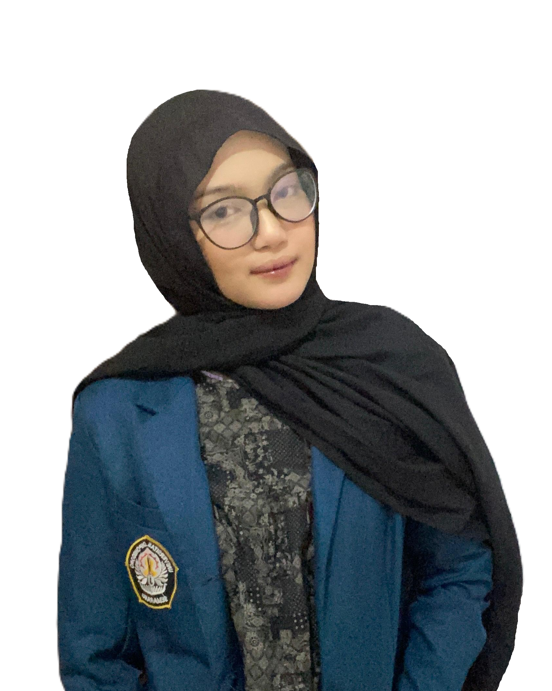
Get to Know
About Me
Geodetic Engineering 2022 – Current
Diponegoro University
I am a final year student, currently completing my final project. My research focuses on developing a machine learning-based gap-filling model for NO2 VCD Sentinel-5P satellite imagery to improve data completeness and usability in geospatial analysis.
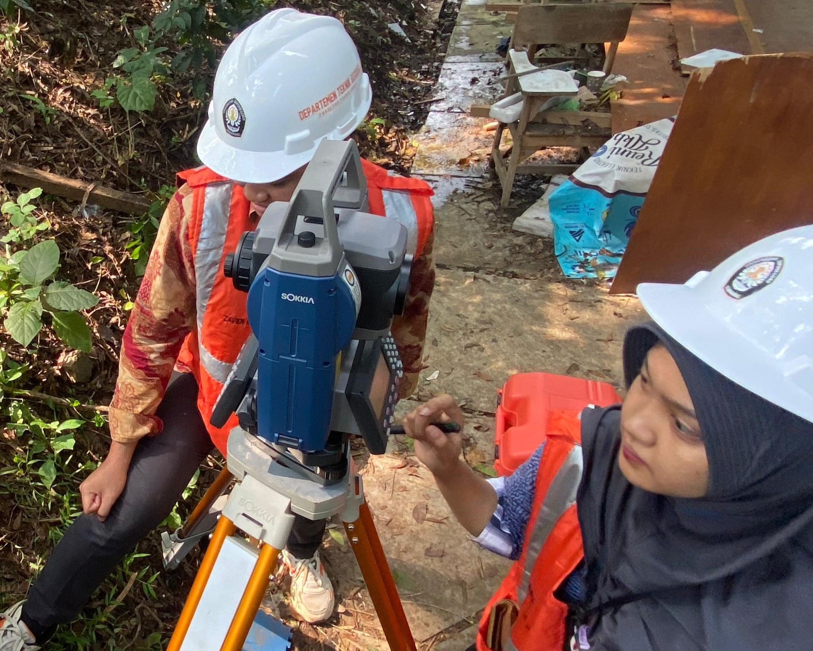
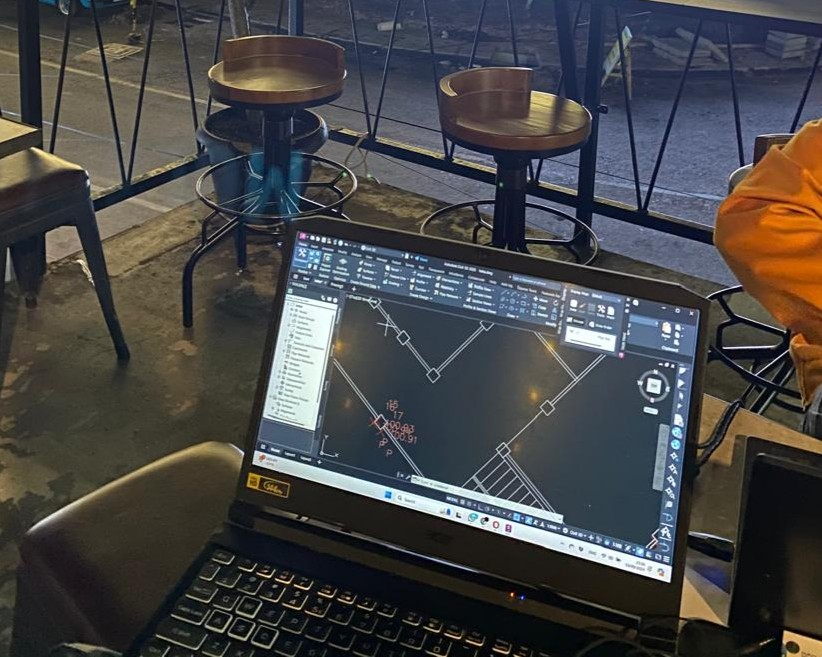
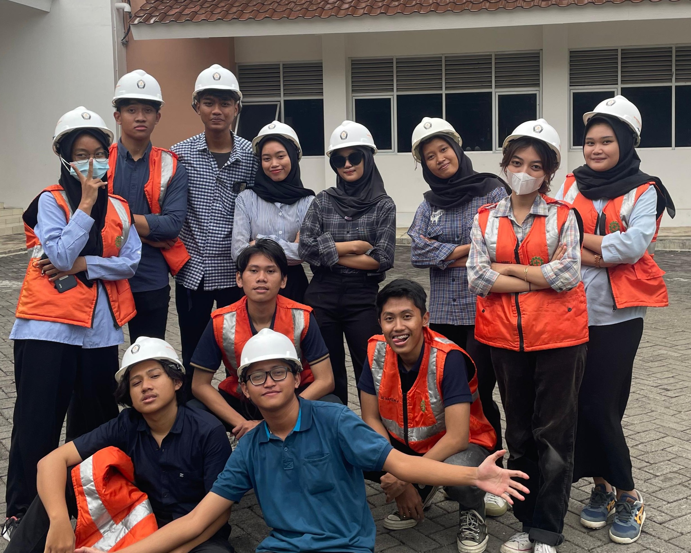
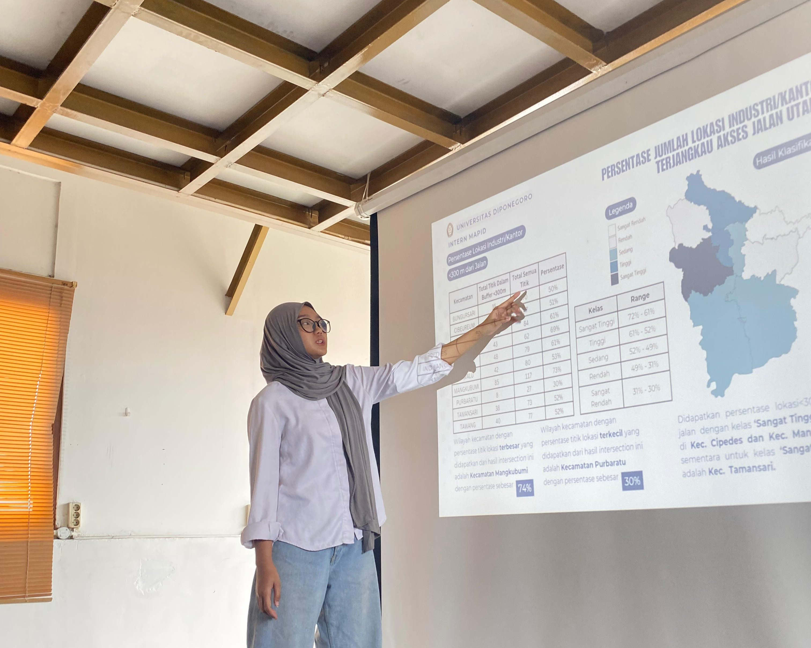
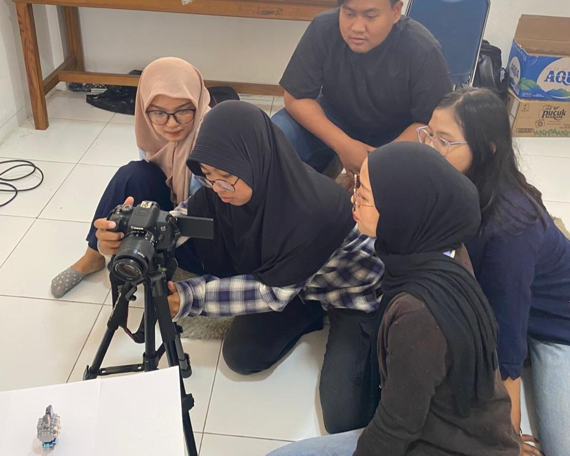
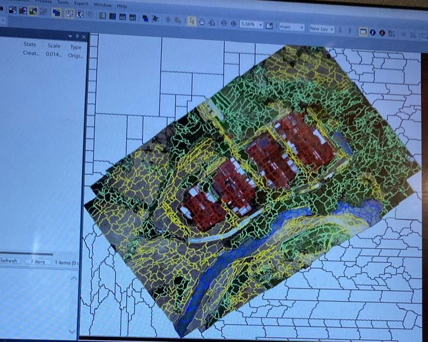
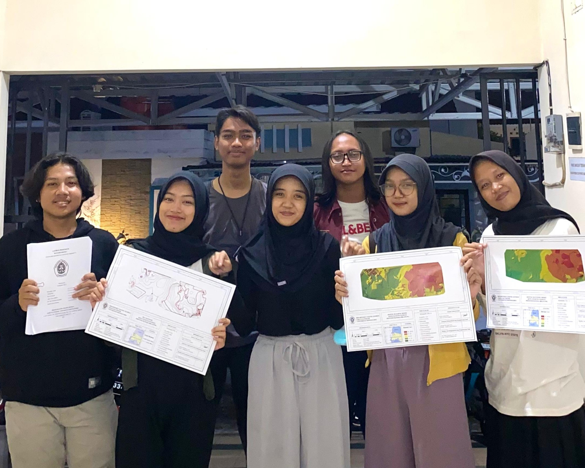
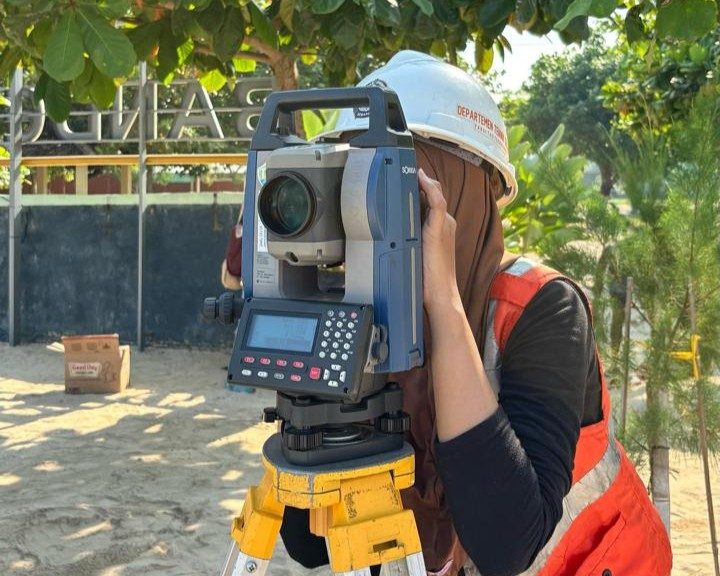
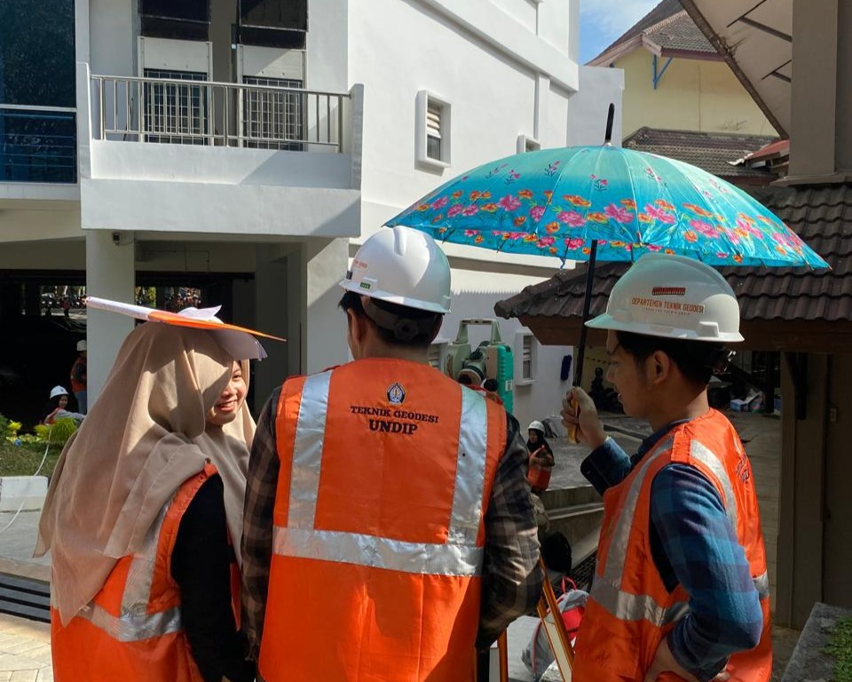
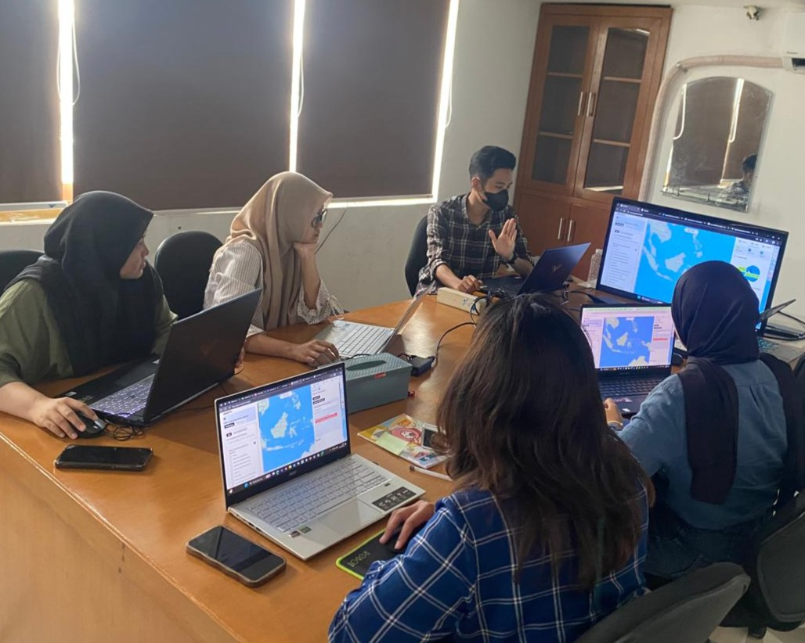
MY EXPERTISE ON
Geodetic
Engineering
Combining ground surveying techniques with geodetic tools and software to produce clear, accurate, and decision-ready spatial maps.
Processing and analyzing geospatial data using ArcGIS, QGIS, SQL, and Python to generate accurate and meaningful spatial insights. including developing a machine learning model for supporting GIS analyst.
Extracting meaningful spatial information from satellite imagery and photogrammetric data using ENVI for spectral analysis, Google Earth Engine for cloud-based remote sensing workflows, Python for automation remote sensing analysis workflows Agisoft Metashape for 3D modeling and point cloud processing, and many more.
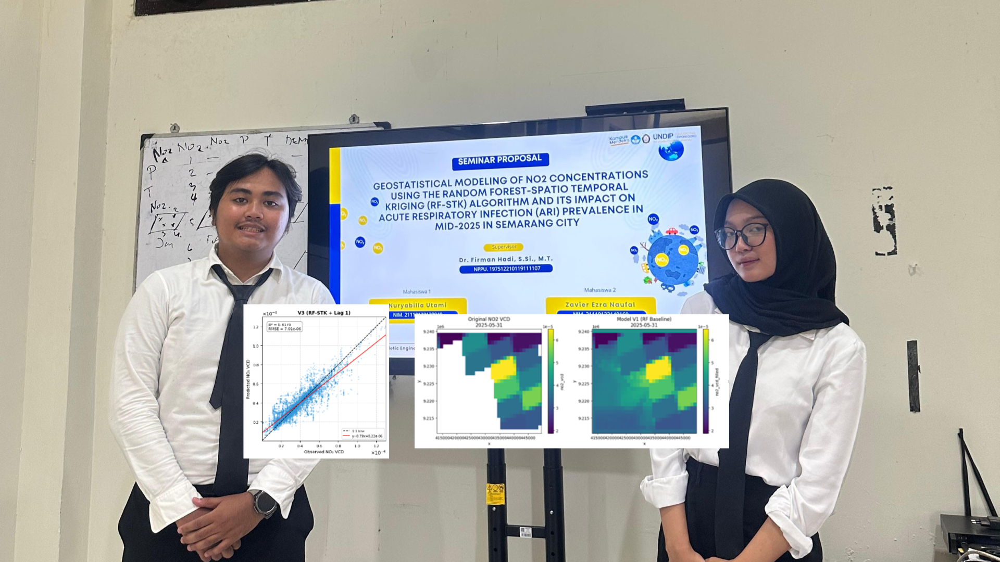
A Hybrid Geostatistical Modelling of NO2 Concentrations using Machine Learning Algorithm Random Forest-Spatio Temporal Kriging (RF-STK) and Its Impact on Acute Respiratory Infection (ARI) Prevalence in Mid-2025 in Semarang, Indonesia.
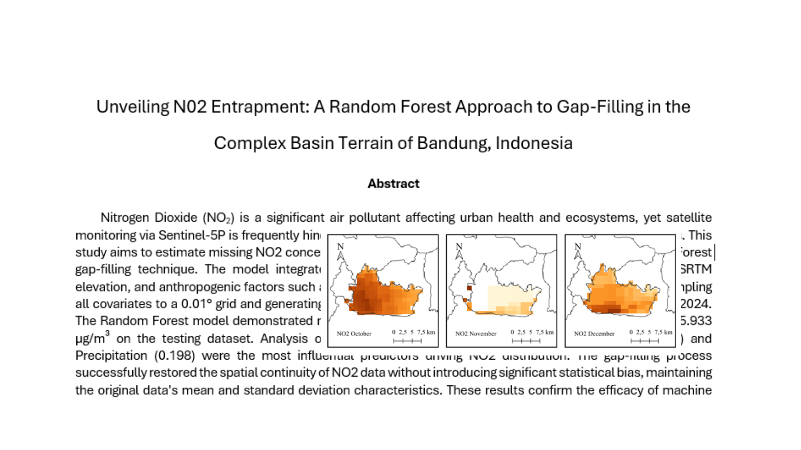
Unveiling N02 Entrapment: A Random Forest Approach to Gap-Filling in the Complex Basin Terrain of Bandung, Indonesia.
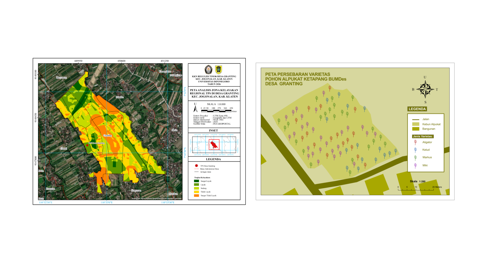
Development of a Regional Feasibility Zone Analysis Map for Waste Disposal Sites (TPS) in Granting Village, Jogonalan District, Klaten Regency, and a Distribution Map of Avocado Ketapang Tree Varieties of BUMDes.
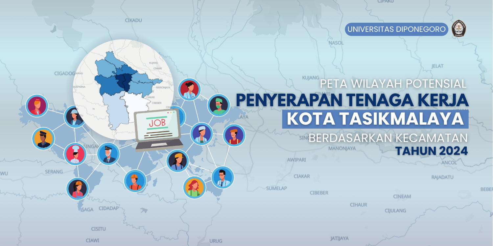
Spatial Analysis for Mapping Potential Labor Absorption Areas by Sub-District using Criteria Importance Through Intercriteria Correlation (CRITIC) Method in Tasikmalaya, Jawa Barat, 2024.
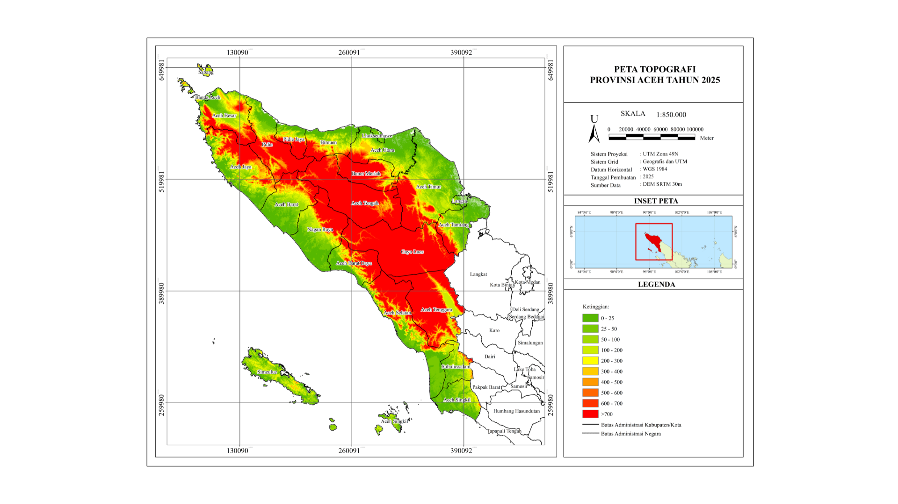
Create emergency topographic maps for areas affected by flash floods in Aceh December 2025, used for further spatial analysis and evacuation.
CONTACT ME
Let's Collaborate